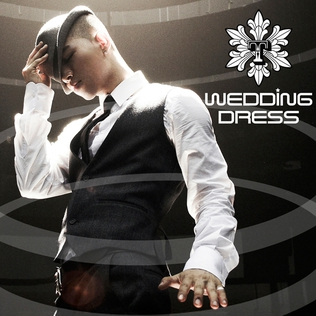

TAEYANG 东永裴
2009年
下面的视频来自@时光开到荼靡 点击进入观看完整视频
2009年1月25日
Star Dance Battle
有中字
太阳和胜利做嘉宾
2009年2月26日
在 Korean Music Awards 赢得：
- Best R&B / Soul Song：Only Look At Me
- Best R&B / Soul Album：Hot专辑
详细资讯：Indieful Rok
Wedding Dress 舞蹈练习室
Wedding Dress外国网友制作的英文版本
- Weddung Dress刚出来一个月就火遍外国了
Wedding Dress恶搞版
2009年10月25日太阳solo参与 SBS Inkigayo人气歌谣
- Where U At

2009年11月15日太阳solo参与 SBS Inkigayo人气歌谣
- Wedding Dress + Where U At
2009年11月20日太阳solo参与 KBS Music Bank
- Count Down + Wedding Dress
下面的视频来自@陆豆纱 点击进入观看完整视频
2009年11月21日
MAMA 2009
GD 太阳 舞台表演
下面的视频来自@陆豆纱 点击进入观看完整视频
2009年11月22日
SBS Sharing Love Concert
唱Wedding Dress
2009年11月29日太阳solo参与 SBS Inkigayo人气歌谣
- Wedding Dress
2009年12月6日太阳solo参与 SBS Inkigayo人气歌谣
- Wedding Dress
2009年12月13日太阳solo参与 SBS Inkigayo人气歌谣
- Wedding Dress
下面的视频来自@陆豆纱 点击进入观看完整视频
2009年12月20日
SBS Gayo Festival
Gossip Man + Only Look At Me + Wedding Dress + Lies + Korean Dream
You And I
朴春 + 太阳